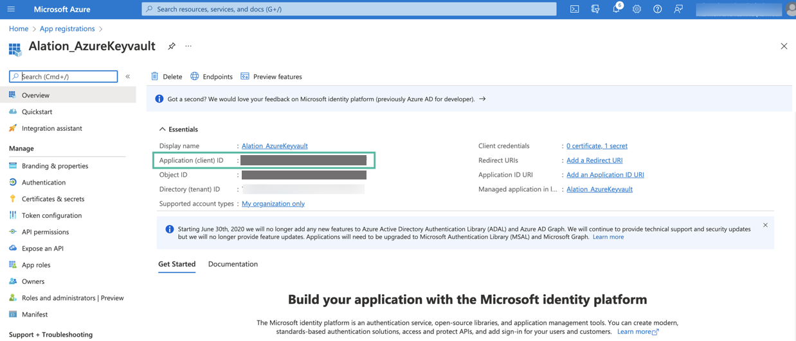
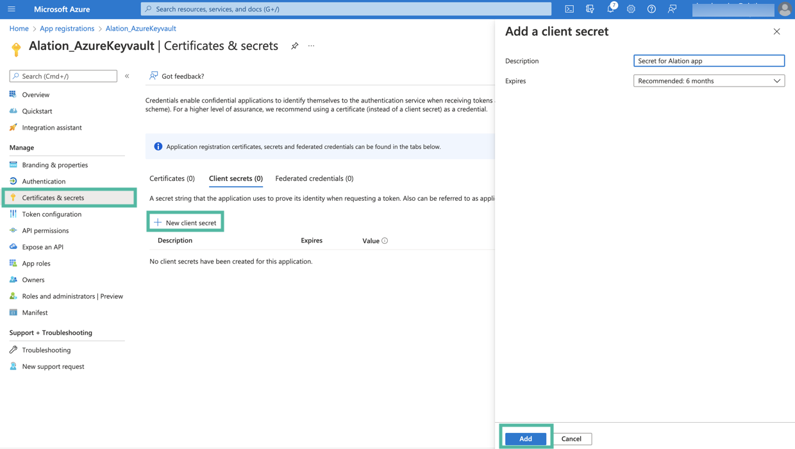
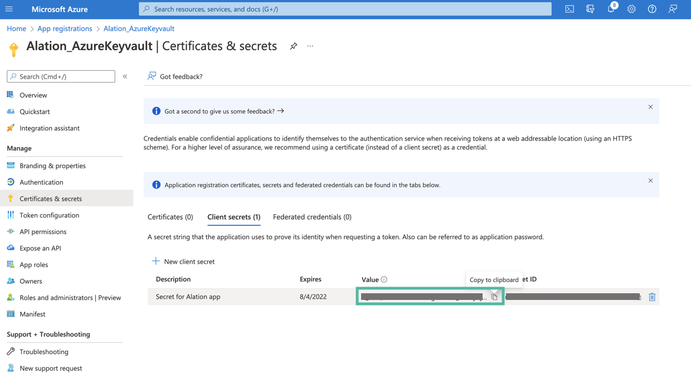
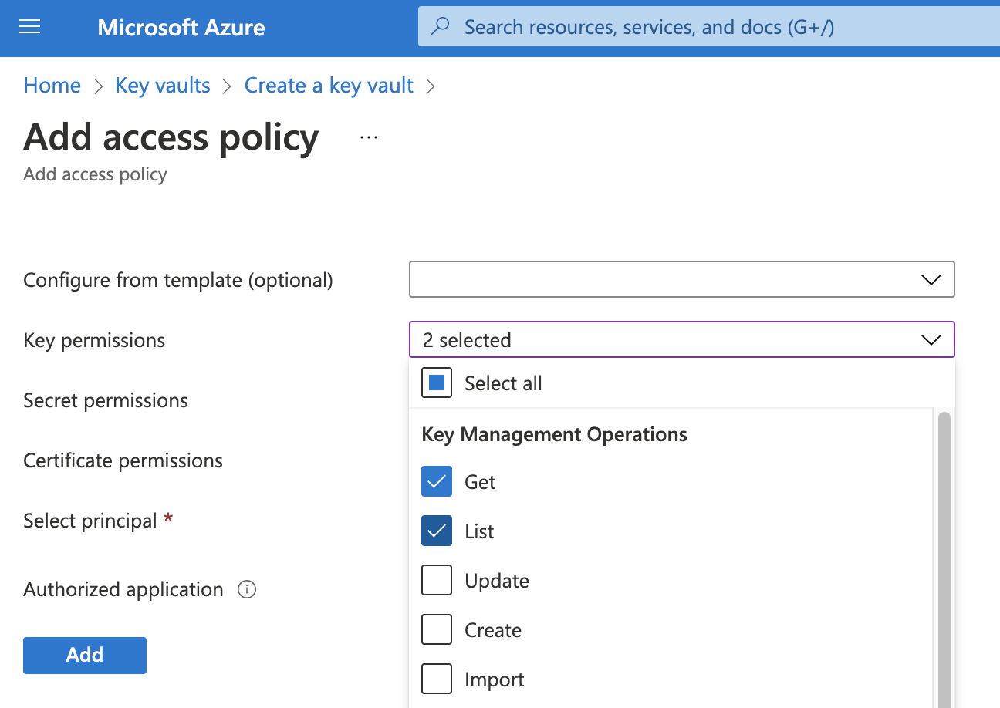
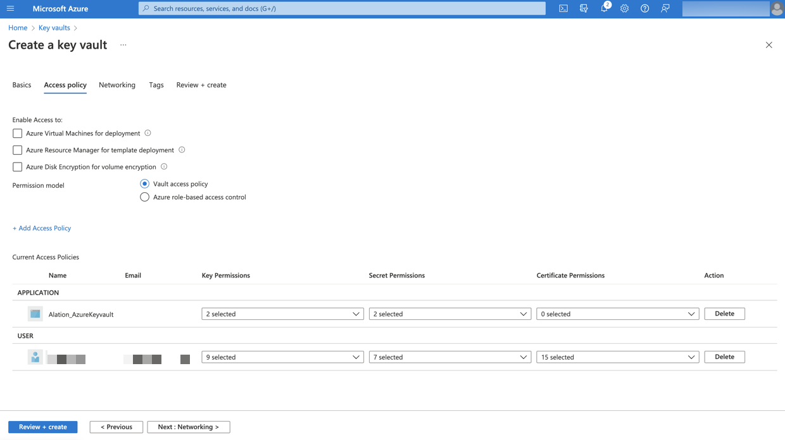
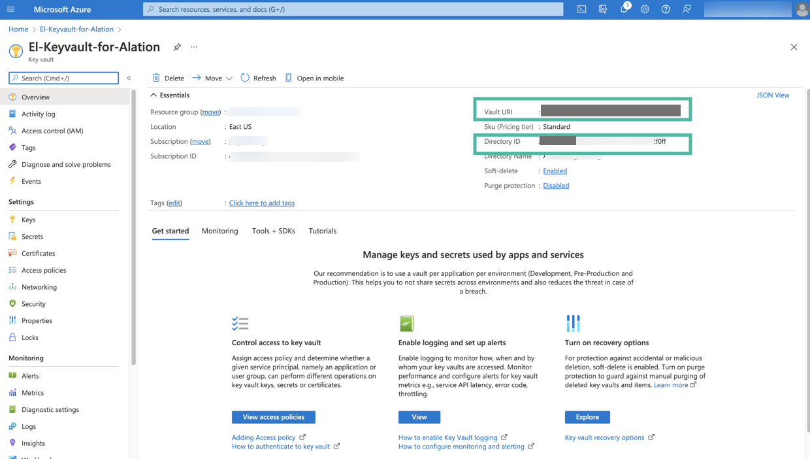
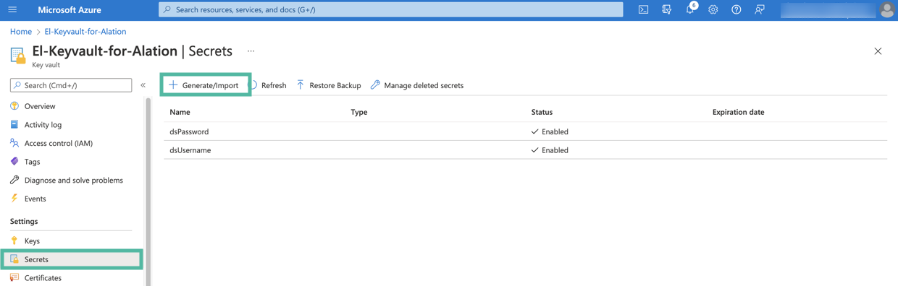
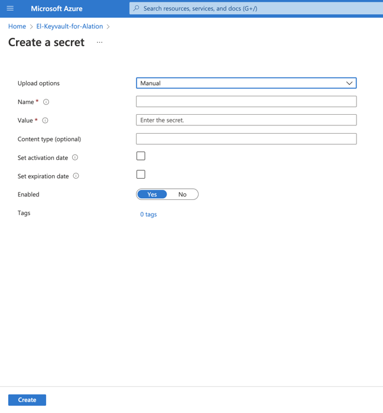
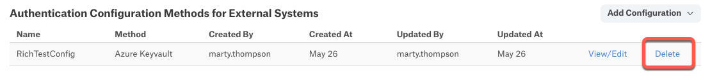

Integration with Azure Key Vault for Data Source Authentication Using OCF Connector¶
Alation Cloud Service Applies to Alation Cloud Service instances of Alation
Customer Managed Applies to customer-managed instances of Alation
Applies from version 2023.1.5
Overview¶
Alation can be configured to retrieve the username and password of a database service account from an Azure key vault. In this case, the service account credentials are not stored on the Alation server. Alation reads the credentials from the key vault when a Data Source Admin launches metadata extraction (MDE), query log ingestion (QLI), and profiling or when users perform profiling of specific tables and columns.
Note
Alation currently does not support reading secrets stored as binary certificates or JSON key/value pairs. Only single secrets in text format can be read.
To set up the integration with an Azure key vault for a data source:
Perform the configuration in MS Azure portal and collect the information required for configuring the Alation server. Refer to Registering an Application for Azure Key Vault Integration below for instructions.
Perform additional configuration in Alation using the information you collected in MS Azure portal. Refer to Configure Authentication with Azure Key Vault for a Data Source below.
Registering an Application for Azure Key Vault Integration¶
Use the steps in this section to register an application in Azure Active Directory in order to configure integration with an Azure key vault for your data sources in Alation.
During the configuration in Azure, collect these values while you are performing the steps and store them safely:
Application (client) ID
Application client secret value
Key vault Directory ID (Tenant ID)
Key vault URI
Name of the key vault secret that stores the username of the service account
Name of the key vault secret that stores the password of the service account.
These values are required for configuration in Alation.
Register an Application and Get the Client ID and Secret Value¶
Sign in to Azure portal.
If you have access to multiple tenants, make sure to switch to the tenant in which you want to register the application.
Go to Azure Active Directory.
In the left-hand menu, under Manage, select App registrations and then click New registration.
Note
You can refer to the following Microsoft documentation about registering an app: Quickstart: Register an app in the Microsoft identity platform
On the Register an application page that opens when you begin registering an app, enter a display name for your application.
Select an appropriate value under Who can use the application or access this API?
Leave the field Redirect URI (optional) empty. Do not select or enter any values.
Click Register to complete the app registration.
After your application is registered, you will be navigated to its Overview page. Under Essentials, look for Application (client) ID. This value will be required during the configuration on the Alation server. Store this value safely.
Next, you will need to generate a client secret for your registered app. In the left-hand menu, select Certificates & secrets > Client secrets and then click New client secret.
Add a description for your client secret.
Select an expiration period for the secret or specify a custom lifetime.
Click Add.
The secret will be added and its value will be available in the Value column of the table with secrets. The value of the secret is required for further configuration on the Alation server. Store this value safely. It is never displayed again after you leave this page.

Next, collect the information from the key vault and make sure the database credentials that you want to use for authentication in Alation are available there.
Create a Key Vault and Collect the Vault Information¶
If a key vault does not exist, follow these steps to create it:
On the homepage of Azure Portal, click Create a resource.
In the Search box, enter Key Vault.
From the results list, choose Key Vault. This will open the Key Vault resource page.
Click the Create button to begin creating a new key vault. This will open a new key vault editor page.
Select the appropriate Subscription and Resource group.
In the Key vault name field, enter a name for your key vault.
Make sure that the values for the Region and Pricing tier fields are correct.
Click Next: Access policy at the bottom of the page.
Add Get and List permissions for Key permissions.
Add Get and List permissions for Secret permissions.
Select your registered application as the principal in the Select principal field.
Click Add. The policy will be added to the key vault.
Select Review + create. This will start the deployment process for your key vault. After Azure confirms the deployment, go to the resource page for your new key vault.
{kind=link}
{kind=link}

On the Overview tab of the key vault page, look for Directory ID and Vault URI. These values are required for configuration on the Alation server. Store these values safely.
Next, add the secrets that will be used in the integration with Alation. Click the Secrets tab from the sidebar to open the Secrets page.
You will need to create two secrets for the data source catalogued in Alation: one to store the username and the second to store the password. Click Generate/Import to begin creating a secret.
In the Name field, specify a name for the secret. The Name field serves as the identifier of the secret. This value is required for the configuration in Alation. Store this value safely.
In the Value field, specify the username of the service account that should be used by Alation to authenticate on the data source.
If necessary, set the activation and expiration dates according to your organization’s password policy.
Click Create.
Create one more secret for the value of the service account password. The value of the Name field will be required for the configuration on the Alation server. Store this value safely.
{kind=link}
Next, proceed to configure integration with the Azure key vault on the Alation server: Configure Authentication with Azure Key Vault for a Data Source.
Configuring Integration with Azure Key Vault for an OCF Data Source¶
Follow the steps below to configure your data source to read the service account username and password for metadata extraction (MDE), query log ingestion (QLI), and Sampling and Profiling from an Azure key vault.
To integrate your data source with an Azure key vault:
Make sure you have the required information from Azure portal at hand:
Application (client) ID
Application client secret value
Key vault Directory ID (Tenant ID)
Key vault URI
Names of the key vault secrets that store your desired settings. These can include JDBC URIs, usernames and passwords, and BI or ELT connector information.
Log into Alation as a Server Admin and click the Settings gear icon.
Under Server Admin, click Authentication.
To the right of Authentication Configuration Methods for External Systems, click Add Configuration and then select Azure Keyvault.
The Authentication Configuration Method page appears. The Method field should show Azure Keyvault.

In Config Name, provide a unique name for the configuration. Your system may have a list of Reserved Config Names. Make sure your name does not conflict with any of these.
In Client Id, enter the client ID of the Azure application.
In Client Secret, enter the application client secret value.
In Tenant ID, enter the tenant ID of the Azure application.
In Vault URL, enter the URL to access the Azure key vault.
Click Save to save the configuration.
Configure Authentication with Azure Key Vault for a Data Source¶
Use the steps in this section to configure your data source to read the service account credentials from an Azure key vault.
Log in to Alation and go to the settings page of the OCF data source for which you’re setting up authentication with Azure key vault.
Open the General Settings tab of the settings page and click the vault icon for each setting you want to configure using Azure Key Vault.
Click Select a Configuration and select the appropriate Azure Key Vault configuration.
Enter the name of the Azure key vault secret that stores the desired setting.
Repeat as needed for additional settings.
Click Save. These identifiers will be used to look up the actual username and password stored in the Azure key vault.
Now, when a Data Source Admin performs MDE, QLI, Sampling, and Profiling, Alation will read the appropriate credentials from the Azure key vault.
Deleting a Key Vault Configuration¶
To delete an authentication configuration:
Log into Alation as a Server Admin and click the Settings gear icon.
Under Server Admin, click Authentication.
Under Authentication Configuration Methods for External Systems, find the configuration you want to delete, and then click Delete at the right of the configuration.
A confirmation dialog appears informing you that the delete operation is irreversible, and advising you to ensure the configuration is not in use on your system. Click Delete to complete the deletion.